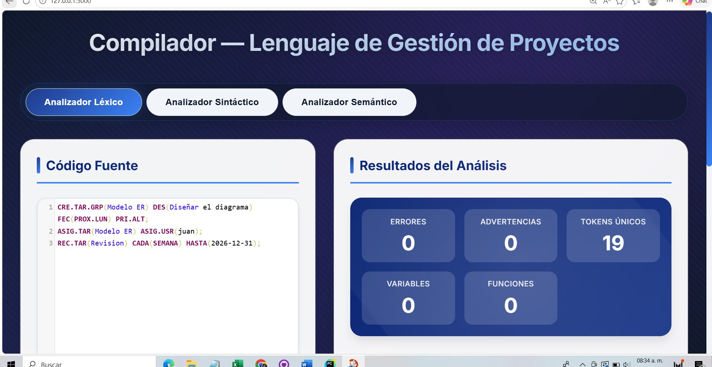
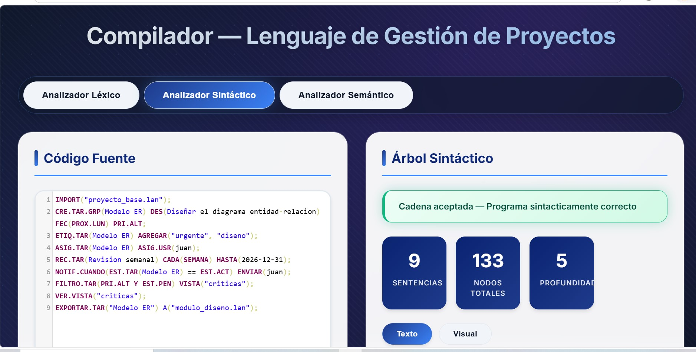
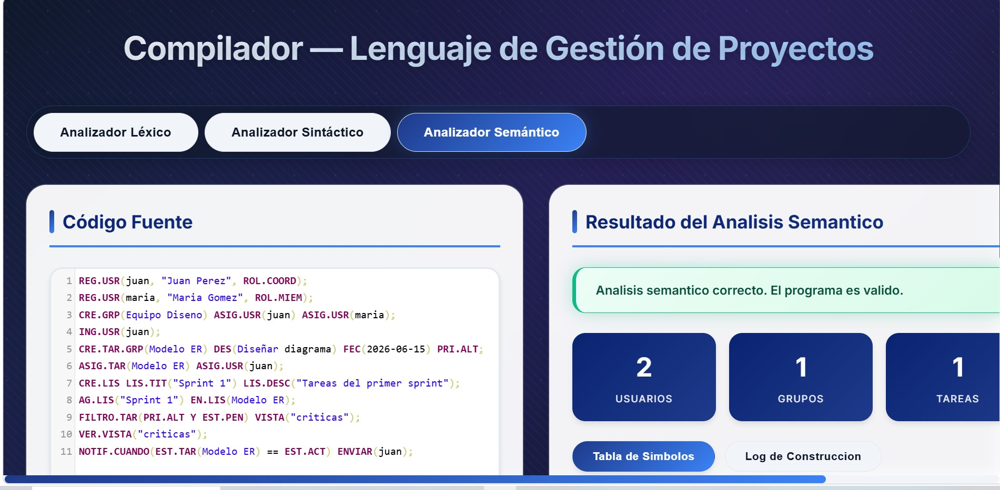

Analizador léxico, sintáctico y semántico completo. Diseñado para automatizar flujos de trabajo colaborativos, control de tareas y evaluaciones.
Este lenguaje está diseñado específicamente para la gestión de proyectos colaborativos. Permite crear usuarios, grupos, tareas, subtareas, listas, mensajes, notificaciones y módulos importables, todo con una sintaxis clara y consistente. El compilador analiza el código en tres fases (léxico, sintáctico y semántico), validando reglas de negocio como existencia de usuarios, sesiones activas, calificaciones en rango y ausencia de duplicados. Desarrollado en Python 3.10+, está pensado para equipos de ingeniería que buscan automatizar flujos de trabajo y mantener el control total de sus proyectos mediante código.
Estructura básica: COMANDO(argumento) MODIFICADOR(valor);
REG.USR, ING.USR, CRE.GRP, ASIG.USR, ROL.COORD
CRE.TAR, CRE.TAR.IND, CRE.TAR.GRP, ASIG.TAR, DIV.TAR
ETIQ.TAR, FILTRO.TAR, VISTA, Y, O, NO
NOTIF.CUANDO, NOTIF.RECORDAR, SUSCRIBIR, ENV.MSG
// Ejemplo completo de un programa válido
IMPORT("proyecto_base.lan");
REG.USR(juan, "Juan Pérez", ROL.COORD);
CRE.GRP(Equipo Diseño) ASIG.USR(juan);
CRE.TAR.GRP(Modelo ER)
DES(Diseñar el diagrama entidad-relación)
FEC(PROX.LUN) PRI.ALT;
ETIQ.TAR(Modelo ER) AGREGAR("urgente", "diseno");
ASIG.TAR(Modelo ER) ASIG.USR(juan);
REC.TAR(Revision semanal) CADA(SEMANA) HASTA(2026-12-31);
NOTIF.CUANDO(EST.TAR(Modelo ER) == EST.FIN) ENVIAR(juan);
FILTRO.TAR(PRI.ALT Y EST.PEN) VISTA("criticas");
VER.VISTA("criticas");
El analizador léxico transforma el código fuente en una secuencia de tokens. Utiliza expresiones regulares y una tabla de palabras reservadas.
| Categoría | Ejemplos |
|---|---|
| Palabras Reservadas | REG.USR, CRE.TAR, PRI.ALT, EST.PEN |
| Operadores Lógicos | Y, O, NO |
| Operadores Comparación | ==, !=, >, <, >=, <= |
| Delimitadores | (, ), ; |
| Fechas | 2025-12-31, HOY, HOY+7DIAS, FIN.MES |
| Horas | 14:30 |
| Números | 0-100 |
| Error | Descripción |
|---|---|
| ERR_INV_DATE | Fecha inválida: 2025-02-30 |
| ERR_INV_TIME | Hora inválida: 25:61 |
| ERROR_LEXICO | Carácter no reconocido: @, #, $ |
Entrada: REG.USR("jperez", "Juan Perez", ROL.COORD);
Tokens generados:
┌─────────────┬──────────────────────┐
│ LEXEMA │ TIPO DE TOKEN │
├─────────────┼──────────────────────┤
│ REG.USR │ PALABRA_RESERVADA │
│ ( │ DELIMITADOR │
│ "jperez" │ CADENA │
│ , │ SIMBOLO │
│ "Juan Perez"│ CADENA │
│ , │ SIMBOLO │
│ ROL.COORD │ PALABRA_RESERVADA │
│ ) │ DELIMITADOR │
│ ; │ DELIMITADOR │
└─────────────┴──────────────────────┘
Parser descendente recursivo que verifica la gramática del lenguaje y construye un Árbol Sintáctico Abstracto (AST).
programa → { sentencia }
sentencia → instruccion "(" [argumentos] ")" [modificadores] ";"
instruccion → REG.USR | CRE.TAR | ASIG.TAR | CRE.GRP | ...
argumentos → (texto | cadena | numero) ["," argumentos]
modificadores → [DES(texto)] [FEC(expr_fecha)] [PRI.ALT|PRI.MED]
expr_fecha → fecha | HOY | HOY+numero DIA | FIN.MES | PROX.LUN
PROGRAMA
└── SENT_CREAR_TAREA
├── CRE.TAR
├── "Documentar API"
└── PRIORIDAD
└── PRI.ALT
Verifica reglas de negocio como existencia de usuarios, sesiones activas, duplicados, fechas válidas y permisos.
| Regla | Descripción | Código |
|---|---|---|
| R1 | No puede registrar un usuario dos veces | E001 |
| R2 | Usuario debe existir antes de operar | E002 |
| R3 | Requiere sesión activa para crear tareas | E003 |
| R8 | No pueden existir tareas duplicadas | E006 |
| R13 | Calificación entre 0 y 100 | E011 |
| R14 | Fecha límite no anterior a hoy | E012 |
[ERROR SEMANTICO] Código : E002 Mensaje : Usuario 'usuariofalso' no ha sido registrado Regla violada: R2
Almacena toda la información de identificadores declarados durante la ejecución.
| Identificador | Categoría | Tipo | Estado | Asignado A | Línea |
|---|---|---|---|---|---|
| jperez | USUARIO | ROL.COORD | ACTIVO | — | 1 |
| backend | GRUPO | GRP | PENDIENTE | jperez | 3 |
| tarea_auth | TAREA | TAREA.IND | PENDIENTE | jperez | 5 |
| tareas_urgentes | LISTA | LISTA | PENDIENTE | — | 8 |
| vista_prioridad | VISTA | FILTRO | PENDIENTE | — | 10 |

Análisis Léxico — Tokenización y detección de errores

Analizador Sintáctico — Representación jerárquica

Analizador Semántico — Gestión de contexto
$ python compilador.py proyecto.gst [LEX] ✅ 34 tokens reconocidos [SINTACTICO] ✅ AST construido correctamente [SEMANTICO] ✅ Todas las reglas cumplidas [TABLA] ✅ 7 símbolos registrados ┌─────────────────────────────────────────┐ │ COMPILACIÓN EXITOSA │ │ Lenguaje de Gestión de Proyectos v1.0 │ └─────────────────────────────────────────┘
Paso 01 [AGREGAR ] [USUARIO] 'jperez' tipo=ROL.COORD, Línea=1 Paso 02 [ACTUALIZAR] 'jperez'.sesion: 'inactiva' → 'activa', Línea=2 Paso 03 [AGREGAR ] [TAREA] 'tarea_auth' tipo=TAREA.IND, Línea=5 Paso 04 [ACTUALIZAR] 'tarea_auth'.asignado_a: '—' → 'jperez', Línea=6 Paso 05 [AGREGAR ] [LISTA] 'tareas_urgentes' creada, Línea=8
El código fuente completo del compilador está disponible en GitHub:
lexico.py — Analizador léxico con tabla de tokenssintactico.py — Parser descendente recursivo y ASTsemantico.py — Analizador semántico y tabla de símbolostokens.json — Definición de palabras reservadas